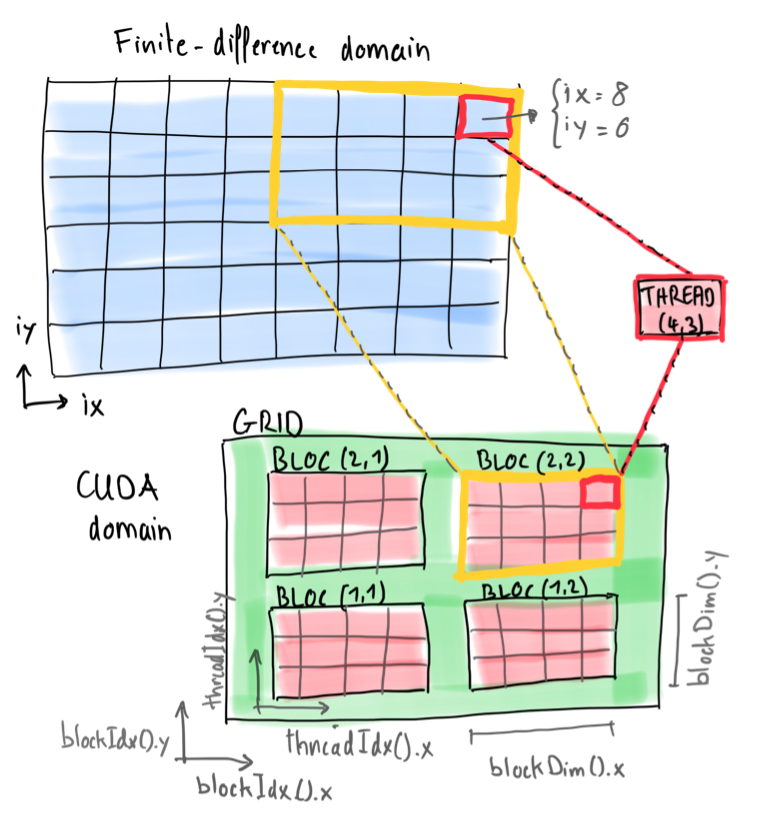
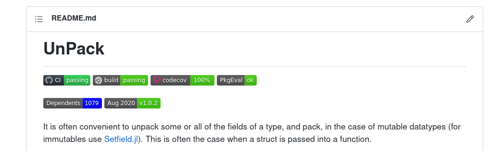

Agenda
üìö GPU computing & performance assessment (continued)
üíª Unit testing and reference tests
üöß Exercises:
Data transfer optimisations on GPUs
GPU codes for diffusion 2D
Reference testing in Julia
üëâ get started with exercises
GPU architecture and kernel programming
GPU computing and performance assessment
Unit testing and reference tests in Julia
We'll get started with a brief overview of the Nvidia GPU architecture and how to program it.
The Nvidia general purpose GPUs we will use in this course can be programmed using the CUDA language extension.
CUDA is accessible in Julia via CUDA.jl, which exposes most of the native CUDA features to the Julia ecosystem.
Note, however, that CUDA.jl does not use nvcc, the Nvidia compiler, but compiles like other Julia code just ahead of time with LLVM.
First, let's distinguish among CPU, GPU, hardware, application and CUDA.
What are host and device?
The host is the system CPU. The system memory (DRAM) linked to the CPU is the host memory. The GPU is called a device and GPU memory is device memory.
The GPU hardware is composed of Global (DRAM) memory, L2 cache and many streaming multi-processors (SMs). Each SM contains many compute units (called "CUDA cores" by Nvidia), registers, L1 cache (can be repurposed as shared memory depending on the architecture) and read-only memory.
The CUDA programming model provides an abstraction of GPU architecture that acts as a bridge between an application and its possible implementation on GPU hardware. [ref]
In the CUDA programming model, blocks of threads compose the grid. In our implementation, we want to map one thread to each finite-difference cell of the 2D Cartesian domain.
The figure hereafter depicts the relation between the CUDA domain and the finite-difference domain:

Indices ix and iy replace the loop indices providing a "vectorised" map of threads - the core to leverage GPU performance. We'll come back to this in a second part of this lecture.
In the CUDA programming model, blocks (red) of threads compose the grid (green).
In our implementations, we will map one thread (red box) to each cell of the 2D Cartesian domain (blue). Other mappings are possible, of course.
How does it relate to the GPU hardware?
All threads of a block are guaranteed to be executed concurrently on an SM (yellow box) and therefore share SM resources such as registers, L1 cache (/shared memory) and read-only memory.
We'll see later that the performance of a GPU application is highly sensitive to the optimal choice of the thread, block, grid layout, the so-called kernel launch parameters.
Writing a Julia GPU function (aka kernel) copying array A to array B with the layout from the above figure looks as follow
using CUDA
function copy!(A, B)
ix = (blockIdx().x-1) * blockDim().x + threadIdx().x
iy = (blockIdx().y-1) * blockDim().y + threadIdx().y
A[ix,iy] = B[ix,iy]
return
end
threads = (4, 3)
blocks = (2, 2)
nx, ny = threads[1]*blocks[1], threads[2]*blocks[2]
A = CUDA.zeros(Float64, nx, ny)
B = CUDA.rand(Float64, nx, ny)
@cuda blocks=blocks threads=threads copy!(A, B)
synchronize()Playing with GPUs: the rules
Current GPUs allow typically a maximum of 1024 threads per block.
The maximum number of blocks allowed is huge; computing the largest possible array on the GPU will make you run out of device memory (currently 16-80 GB) before hitting the maximal number of blocks when selecting sensible kernel launch parameters (usually threads per block >= 128).
Threads, blocks and grid have 3D "Cartesian" topology, which is very useful for 1D, 2D and 3D Cartesian finite-difference domains.
With this short overview we should have the important concepts in mind to get started with GPU computing üöÄ
Learn about:
How to establish the peak memory throughput of your GPU
GPU array and kernel programming
Consolidate:
The basics of benchmarking
How to compute achieved memory throughput
This content is distributed under MIT licence. Authors: S. Omlin (CSCS), L. Räss (ETHZ).
In order to get started, we need to connect to a machine which has GPU(s).
Let's take some time to get started.
üëâ Getting started:
Fetch your login infos in the daint_login.md file within your personal Polybox folder.
Head to Software install for the directions.
Finally, fetch the l6_1-gpu-memcopy.ipynb notebook for this lecture and upload them to your scratch on Piz Daint. Executing wget https://raw.githubusercontent.com/eth-vaw-glaciology/course-101-0250-00/main/slide-notebooks/notebooks/l6_1-gpu-memcopy.ipynb on Daint should work.
We will use the packages CUDA and BenchmarkTools to create a little performance laboratory:
import Pkg; Pkg.add("BenchmarkTools");
using CUDA
using BenchmarkToolsThe performance of most scientific applications nowadays is bound by memory access speed (memory-bound) rather than by the speed computations can be done (compute-bound).
The reason is that current GPUs (and CPUs) can do many more computations in a given amount of time than they can access numbers from main memory.
This imbalance can be quantified by dividing the computation peak performance [GFLOP/s] by the memory access peak performance [GB/s] and multiplied by the size of a number in Bytes (for simplicity, theoretical peak performance values as specified by the vendors can be used). For example for the Tesla P100 GPU, it is:
(here computed with double precision values taken from the vendor's product specification sheet).
So we can do 58 floating point operations per number read from main memory or written to it.
As a consequence, we can consider floating point operations be "for free" when we work in the memory-bounded regime as in this lecture.
Therefore, let us start with investigating the performance of different ways to express and launch GPU memory copies. We will wrap all of these memory copies in functions, to enable the Julia compiler to optimize them best.
There exists already the function copyto!, which permits to copy data from one pre-allocated array to another; thus, we start with analysing this function's performance.
But first, let us list what GPUs are available and make sure we assign no more than one user per GPU:
collect(devices())
device!(0) # select a GPU between 0-7To this purpose, we allocate two arrays and benchmark the function using BenchmarkTools:
nx = ny = 32
A = CUDA.zeros(Float64, nx, ny);
B = CUDA.rand(Float64, nx, ny);
@benchmark begin copyto!($A, $B); synchronize() end$ into the benchmarked expression.CUDA.zeros(nx, ny) allocates Float32.Time samples resulting from benchmarking as just performed follow normally a right skewed distribution.
For such distribution, the median is the most robust of the commonly used estimators of the central tendency; the minimum is in general also a good estimator as hardware cannot by accident run faster than with the ideal and it is as a result commonly used for reporting performance (for more information on estimators see here).
Using @belapsed instead of @benchmark, we directly obtain the minimum of the taken time samples:
t_it = @belapsed begin copyto!($A, $B); synchronize() endNow, we know that it does not take "an awful lot of time". Of course, we do not want to stop here, but figure out how good the achieved performance was.
To this aim, we compute the total memory throughput, T_tot [GB/s], which is defined as the volume of the copied data [GB] divided by the time spent [s]:
T_tot = 2*1/1e9*nx*ny*sizeof(Float64)/t_it2 comes from the fact that the data is read and written (2 operations).Compare now T_tot with the known peak memory throughput, T_peak, which is found e.g. in scientific or vendor publications (for the Nvidia Tesla P100 GPUs, it is 559 GB/s, according to this source.
You have surely found T_tot to be orders of magnitude below T_peak. This is to be expected when copying a small array.
Let us determine how T_tot behaves with increasing array sizes:
array_sizes = []
throughputs = []
for pow = 0:11
nx = ny = 32*2^pow
if (3*nx*ny*sizeof(Float64) > CUDA.available_memory()) break; end
A = CUDA.zeros(Float64, nx, ny);
B = CUDA.rand(Float64, nx, ny);
t_it = @belapsed begin copyto!($A, $B); synchronize() end
T_tot = 2*1/1e9*nx*ny*sizeof(Float64)/t_it
push!(array_sizes, nx)
push!(throughputs, T_tot)
println("(nx=ny=$nx) T_tot = $(T_tot)")
CUDA.unsafe_free!(A)
CUDA.unsafe_free!(B)
endYou can observe that the best performance is on pair with T_peak or a bit lower (measured 522 GB/s with the Tesla P100 GPU) as copyto! is a function that needs to work in all possible cases and it is not specifically optimised for a particular hardware.
Furthermore, we note that best performance is obtained for large arrays (in the order of Gigabytes).
We will use the array size for which we obtained the best result for the remainder of the performance experiments:
T_tot_max, index = findmax(throughputs)
nx = ny = array_sizes[index]
A = CUDA.zeros(Float64, nx, ny);
B = CUDA.rand(Float64, nx, ny);Let us now create our own memory copy function using GPU Array Programming (AP).
We can write a memory copy simply as A .= B; and wrap it in a function using Julia's concise notation, it looks as follows:
@inbounds memcopy_AP!(A, B) = (A .= B)@inbounds macro to make sure no array bounds checking is performed, which would slow down significantly.A = B would not do a memcopy, but make A an alias of B, i.e. make A point to the same data in memory as B.We also benchmark it and compute T_tot:
t_it = @belapsed begin memcopy_AP!($A, $B); synchronize() end
T_tot = 2*1/1e9*nx*ny*sizeof(Float64)/t_itThe performance you observe might be a little lower than with the copyto! function (measured 496 GB/s with the Tesla P100 GPU).
The few experiments that we have done together so far have shown you already that performing memory copy with maximal possible performance (T_peak) is not a completely trivial task.
We will now use GPU Kernel Programming (KP) to try to get closer to T_peak.
A memory copy kernel can be written e.g. as follows:
@inbounds function memcopy_KP!(A, B)
ix = (blockIdx().x-1) * blockDim().x + threadIdx().x
iy = (blockIdx().y-1) * blockDim().y + threadIdx().y
A[ix,iy] = B[ix,iy]
return nothing
endThen, in order to copy the (entire) array B to A, we need to launch the kernel such that the above indices ix and iy map exactly to each array cell.
Therefore, we need to have blocks[1]*threads[1] == nx and blocks[2]*threads[2] == ny.
We will try first with the simplest possible option using only one thread per block:
threads = (1, 1)
blocks = (nx, ny)
t_it = @belapsed begin @cuda blocks=$blocks threads=$threads memcopy_KP!($A, $B); synchronize() end
T_tot = 2*1/1e9*nx*ny*sizeof(Float64)/t_itT_tot is certainly orders of magnitude below T_peak with this kernel launch parameters.
We need to take into account that single threads cannot run completely independently, but threads are launched in small groups within a block, called warps; a warp consists of 32 threads on current GPUs.
Furthermore, warps should access contiguous memory for best performance.
We therefore retry using 32 threads (one warp) per block as follows:
threads = (32, 1)
blocks = (nx÷threads[1], ny)
t_it = @belapsed begin @cuda blocks=$blocks threads=$threads memcopy_KP!($A, $B); synchronize() end
T_tot = 2*1/1e9*nx*ny*sizeof(Float64)/t_itattribute(device(),CUDA.DEVICE_ATTRIBUTE_WARP_SIZE).T_tot is now probably in the order of magnitude of T_peak, yet depending on the used GPU it can be still significantly below (measured 302 GB/s with the Tesla P100 GPU).
If T_tot is significantly below T_peak, then we need to set the numbers of threads per block closer to the maximum the GPU allows.
Let us determine how T_tot behaves with an increasing number of threads per blocks:
max_threads = attribute(device(),CUDA.DEVICE_ATTRIBUTE_MAX_THREADS_PER_BLOCK)
thread_count = []
throughputs = []
for pow = Int(log2(32)):Int(log2(max_threads))
threads = (2^pow, 1)
blocks = (nx÷threads[1], ny)
t_it = @belapsed begin @cuda blocks=$blocks threads=$threads memcopy_KP!($A, $B); synchronize() end
T_tot = 2*1/1e9*nx*ny*sizeof(Float64)/t_it
push!(thread_count, prod(threads))
push!(throughputs, T_tot)
println("(threads=$threads) T_tot = $(T_tot)")
endYou should observe now that beyond a certain minimum number of threads per block (64 with the Tesla P100 GPU), T_tot is quite close to T_peak (which exact thread/block configuration leads to the best T_tot depends on the used GPU architecture).
Instead of increasing the number of threads only in the x dimension, we can also do so in the y dimension.
We keep though 32 threads in the x dimension in order to let the warps access contiguous memory:
thread_count = []
throughputs = []
for pow = 0:Int(log2(max_threads/32))
threads = (32, 2^pow)
blocks = (nx÷threads[1], ny÷threads[2])
t_it = @belapsed begin @cuda blocks=$blocks threads=$threads memcopy_KP!($A, $B); synchronize() end
T_tot = 2*1/1e9*nx*ny*sizeof(Float64)/t_it
push!(thread_count, prod(threads))
push!(throughputs, T_tot)
println("(threads=$threads) T_tot = $(T_tot)")
endT_tot is even slightly better in general. Much more important is though that a thread block accesses now not a 1D-line of the arrays, but a 2D block.
We will see later that this is of great benefit when, e.g., computing finite difference derivatives in x and y direction.
So far, we experimented with memory copy in the strict sense: copy an array from one place to the other. When doing computations, we often read more data than we write.
We will therefore also do a few experiments on another commonly benchmarked case: read two arrays and write only one.
We modify therefore the previous kernel to take a third array C as input and add it to B (the rest is identical):
@inbounds function memcopy2_KP!(A, B, C)
ix = (blockIdx().x-1) * blockDim().x + threadIdx().x
iy = (blockIdx().y-1) * blockDim().y + threadIdx().y
A[ix,iy] = B[ix,iy] + C[ix,iy]
return nothing
endThen, we test exactly as for the previous kernel how T_tot behaves with an increasing number of threads per blocks in y dimension, keeping it fixed to 32 in x dimension:
C = CUDA.rand(Float64, nx, ny);
thread_count = []
throughputs = []
for pow = 0:Int(log2(max_threads/32))
threads = (32, 2^pow)
blocks = (nx÷threads[1], ny÷threads[2])
t_it = @belapsed begin @cuda blocks=$blocks threads=$threads memcopy2_KP!($A, $B, $C); synchronize() end
T_tot = 3*1/1e9*nx*ny*sizeof(Float64)/t_it
push!(thread_count, prod(threads))
push!(throughputs, T_tot)
println("(threads=$threads) T_tot = $(T_tot)")
end3 instead of 2 in the computation of T_tot: 2 arrays are read and 1 written (3 operations).Compare now the best measured T_tot to the T_peak obtained from the publication and if it is higher, then it means we need to correct T_peak to take the value of the T_tot measured (T_tot measured with the Tesla P100 GPU is 561 GB/s, i.e., 2 GB/s higher than the T_peak obtained from the publication mentioned earlier).
Note that the T_peak reported in the publication was obtained with a slightly different kernel which multiplies C with a scalar in addition; it is usually referred to as triad.
For completeness, we will also quickly benchmark a triad kernel.
To this purpose, we will directly use the best thread/block configuration that we have found in the previous experiment:
@inbounds function memcopy_triad_KP!(A, B, C, s)
ix = (blockIdx().x-1) * blockDim().x + threadIdx().x
iy = (blockIdx().y-1) * blockDim().y + threadIdx().y
A[ix,iy] = B[ix,iy] + s*C[ix,iy]
return nothing
end
s = rand()
T_tot_max, index = findmax(throughputs)
threads = (32, thread_count[index]÷32)
blocks = (nx÷threads[1], ny÷threads[2])
t_it = @belapsed begin @cuda blocks=$blocks threads=$threads memcopy_triad_KP!($A, $B, $C, $s); synchronize() end
T_tot = 3*1/1e9*nx*ny*sizeof(Float64)/t_itThere should be no significant difference between T_tot of this triad kernel and of the previous kernel (with the Tesla P100 GPU, it is 561 GB/s with both kernels).
Finally, let us also check the triad performance we obtain with GPU array programming:
@inbounds memcopy_triad_AP!(A, B, C, s) = (A .= B.+ s.*C)
t_it = @belapsed begin memcopy_triad_AP!($A, $B, $C, $s); synchronize() end
T_tot = 3*1/1e9*nx*ny*sizeof(Float64)/t_itT_tot is probably a bit lower than in the above experiment, but still rather close to T_peak.
Congratulations! You have successfully made it through the memory copy kernel optimization experiments and learned about the fundamental parameters determining memory throughput.
One moment! For the following exercises you will need the parameters we have established here for best memory access:
println("nx=ny=$nx; threads=$threads; blocks=$blocks")(Unit) testing is pervasive in the Julia ecosystem thanks to efficient built-in tools and a culture encouraging testing.
This JuliaCon 2021 talk gives a nice overview: more than 90% of all registered packages have at least some tests, with the median package having about 25% of the code being tests.
Terms:
"unit test": small tests, usually on a per-function basis
"integration test": test large part of the code base
"reference test": test against a previous output (not necessarily known whether "good" or "bad")
"Continuous Integration" (CI): running of the tests automatically on push to github/gitlab/etc
how to assess CI-run tests for packages of the Julia ecosystem (registered packages)
how to run tests for registered packages on your computer
how to use tests of packages as "documentation"
create a test-suite for a small project of your
learn to do reference-tests (besides unit-tests)
(How to setup CI as part of a project of yours will be taught later)
Let's look at a simple package: UnPack.jl

the CI-results are often displayed in form of badges
there are different CI-services, most used is GitHub-Actions
often the tests are a fairly good source of documentation by example
üíª -> "demo"
Using: UnPack.jl
Installed packages can be tested:
pkg> add UnPack
pkg> test UnPackGoing one step further. Make and test changes of a package. dev the package:
pkg> dev UnPackThis will checkout the package to ~/.julia/dev/UnPack.
Re-Start Julia with this package activated:
$ cd ~/.julia/dev/UnPack
$ julia --projectIn package mode run the tests:
(UnPack) pkg> test
Testing UnPack
Status `/tmp/jl_LgpabA/Project.toml`
[3a884ed6] UnPack v1.0.2 `~/julia/dot-julia-dev/UnPack`
...If you edit the source, e.g. to fix a bug, re-run the tests before submitting a PR.
Start easy:
add test just to a script
Step up:
move tests to test/runtests.jl, the standard location
include scripts to just run-through
use "reference-tests" as integration tests
Another day:
setup CI on GitHub
using Plots
function car_travel_1D()
# Physical parameters
V = 113.0 # speed, km/h
L = 200.0 # length of segment, km
dir = 1 # switch 1 = go right, -1 = go left
ttot = 16.0 # total time, h
# Numerical parameters
dt = 0.1 # time step, h
nt = Int(cld(ttot, dt)) # number of time steps
# Array initialisation
T = zeros(nt)
X = zeros(nt)
# Time loop
for it = 2:nt
T[it] = T[it-1] + dt
X[it] = X[it-1] + dir*V*dt # move the car
if X[it] > L
dir = -1 # if beyond L, go back (left)
elseif X[it] < 0
dir = 1 # if beyond 0, go back (right)
end
end
# Visualisation
# display(scatter(T, X, markersize=5, xlabel="time, hrs", ylabel="distance, km", framestyle=:box, legend=:none))
return T, X
end
T, X = car_travel_1D()Steps:
generate a project and add scripts/car_travel.jl
use reference tests
add some unit tests in-line
move the tests to test/runtests.jl
pkg> test run, you have to have a file src/MyPkg.jl, even if it is just empty.Step 1: generate a package
$ cd to-some-dir
$ julia --project
julia> using Pkg; Pkg.generate("L6Testing")Steps 3–4 are in the repository course-101-0250-00-L6Testing.jl; note that this steps are encoded in the git history which the README links into.
.ipynb) have to be uploaded to your private (shared) GitHub repository, in a specific folder for each lecture. The git commit hash (or SHA) of the final push needs to be uploaded on Moodle (more).üëâ See Logistics for submission details.
The goal of this exercise is to:
learn how to minimize redundant main memory transfers and understand its importance;
understand the limits of the total memory throughput metric for performance evaluation;
learn how to compute the effective memory throughput and understand its interest;
learn about GPU array and kernel programming on the way.
Prerequisites:
the lecture 6 Benchmarking memory copy and establishing peak memory access performance (l6_1-gpu-memcopy.ipynb)
This content is distributed under MIT licence. Authors: S. Omlin (CSCS), L. Räss (ETHZ).
üëâ Download the lecture6_ex1.ipynb notebook and edit it.
Create a new folder in your GitHub repository for this week's (lecture6) exercises, including a README.md (as usual).
Hand-in the finalised notebook in your GitHub lectrue 6 folder and;
Report the output of Task 7 in the README.md.
We will again use the packages CUDA, BenchmarkTools and Plots to create a little performance laboratory:
using IJulia
using CUDA
using BenchmarkTools
using PlotsBefore we go further, make sure we select the GPU we want to run on (if running on a multi-GPU node). In the terminal or Julia REPL in shell mode (typing ;), type nvidia-smi command to list visible GPUs. Remember the GPU_ID you want to use.
Then, in Julia, add following if you decide to, e.g., use GPU 0:
GPU_ID = 0
device!(GPU_ID)Let us consider the following 2-D heat diffusion solver (the comments explain the code):
function diffusion2D()
# Physics
lam = 1.0 # Thermal conductivity
c0 = 2.0 # Heat capacity
lx, ly = 10.0, 10.0 # Length of computational domain in dimension x and y
# Numerics
nx, ny = 32*2, 32*2 # Number of gridpoints in dimensions x and y
nt = 100 # Number of time steps
dx = lx/(nx-1) # Space step in x-dimension
dy = ly/(ny-1) # Space step in y-dimension
_dx, _dy = 1.0/dx, 1.0/dy
# Array initializations
T = CUDA.zeros(Float64, nx, ny) # Temperature
Ci = CUDA.zeros(Float64, nx, ny) # 1/Heat capacity
qTx = CUDA.zeros(Float64, nx-1, ny-2) # Heat flux, x component
qTy = CUDA.zeros(Float64, nx-2, ny-1) # Heat flux, y component
dTdt = CUDA.zeros(Float64, nx-2, ny-2) # Change of Temperature in time
# Initial conditions
Ci .= 1/c0 # 1/Heat capacity (could vary in space)
T .= CuArray([10.0*exp(-(((ix-1)*dx-lx/2)/2)^2-(((iy-1)*dy-ly/2)/2)^2) for ix=1:size(T,1), iy=1:size(T,2)]) # Initialization of Gaussian temperature anomaly
# Time loop
dt = min(dx^2,dy^2)/lam/maximum(Ci)/4.1 # Time step for 2D Heat diffusion
opts = (aspect_ratio=1, xlims=(1, nx), ylims=(1, ny), clims=(0.0, 10.0), c=:davos, xlabel="Lx", ylabel="Ly") # plotting options
for it = 1:nt
diffusion2D_step!(T, Ci, qTx, qTy, dTdt, lam, dt, _dx, _dy) # Diffusion time step.
if it % 10 == 0
IJulia.clear_output(true)
display(heatmap(Array(T)'; opts...)) # Visualization
sleep(0.1)
end
end
endThe function to compute an actual time step is still missing to complete this solver. It can be written, e.g., as follows with finite differences using GPU array programming (AP):
@inbounds @views macro d_xa(A) esc(:( ($A[2:end , : ] .- $A[1:end-1, : ]) )) end
@inbounds @views macro d_xi(A) esc(:( ($A[2:end ,2:end-1] .- $A[1:end-1,2:end-1]) )) end
@inbounds @views macro d_ya(A) esc(:( ($A[ : ,2:end ] .- $A[ : ,1:end-1]) )) end
@inbounds @views macro d_yi(A) esc(:( ($A[2:end-1,2:end ] .- $A[2:end-1,1:end-1]) )) end
@inbounds @views macro inn(A) esc(:( $A[2:end-1,2:end-1] )) end
@inbounds @views function diffusion2D_step!(T, Ci, qTx, qTy, dTdt, lam, dt, _dx, _dy)
qTx .= .-lam.*@d_xi(T).*_dx # Fourier's law of heat conduction: qT_x = -λ ∂T/∂x
qTy .= .-lam.*@d_yi(T).*_dy # ... qT_y = -λ ∂T/∂y
dTdt .= @inn(Ci).*(.-@d_xa(qTx).*_dx .- @d_ya(qTy).*_dy) # Conservation of energy: ∂T/∂t = 1/cp (-∂qT_x/∂x - ∂qT_y/∂y)
@inn(T) .= @inn(T) .+ dt.*dTdt # Update of temperature T_new = T_old + ∂t ∂T/∂t
endRun now the 2-D heat diffusion solver to verify that it is working:
diffusion2D()Benchmark the function diffusion2D_step! using BenchmarkTools and compute a straightforward lower bound of the total memory throughput, T_tot_lb; then, compare it to the peak memory throughput, T_peak. You can compute T_tot_lb considering only full array reads and writes and knowing that there is no data reuse between different GPU array computation statements as each statement is translated into a separate and independently launched kernel (note that to obtain the actual T_tot, one would need to use a profiler).
Furthermore, use the nx=ny found best in the introduction notebook (1_memorycopy.ipynb) to allocate the necessary arrays if the amount of memory of your GPU allows it (else divide this nx and ny by 2).
To help you, there is already some code below to initialize the required arrays and scalars for the benchmarking.
$ and note that you do not need to call the solver itself (diffusion2D)!nx = ny = # complete!
T = CUDA.rand(Float64, nx, ny);
Ci = CUDA.rand(Float64, nx, ny);
qTx = CUDA.zeros(Float64, nx-1, ny-2);
qTy = CUDA.zeros(Float64, nx-2, ny-1);
dTdt = CUDA.zeros(Float64, nx-2, ny-2);
lam = _dx = _dy = dt = rand();# solution
t_it = @belapsed begin ... end
T_tot_lb = .../1e9*nx*ny*sizeof(Float64)/t_itSave the measured minimal runtime and the computed T_tot_lb in other variables (t_it_task1 and T_tot_lb_task1) in order not to overwrite them later (adapt these two lines if you used other variable names!); moreover, we will remove the arrays we do no longer need in order to save space:
t_it_task1 = t_it
T_tot_lb_task1 = T_tot_lb
CUDA.unsafe_free!(qTx)
CUDA.unsafe_free!(qTy)
CUDA.unsafe_free!(dTdt)T_tot_lb should be relatively close to T_peak. Nevertheless, one could do these computations at least three times faster. You may wonder why it is possible to predict that just looking at the code. It is because three of the four arrays that are updated every iteration are not computed based on their values in the previous iteration and their individual values could therefore be computed on-the-fly when needed or stored in the much faster on-chip memory as intermediate results; these three arrays would never need to be stored in main memory and read from there. Only the temperature array (T) needs inevitably to be read from main memory and written to it at every iteration as is computed based on its values from the previous iteration (and the entire temperature array is orders of magnitudes bigger than the available on-chip memory). In addition, the heat capacity array (Ci) needs to be entirely read at every iteration. To sum up, all but three of eleven full array memory reads or writes can be avoided. If we avoid them, we reduce the main memory accesses by more than a factor three and can therefore expect the code to be at least three times faster.
As a consequence, T_tot and T_tot_lb are often not good metrics to evaluate the optimality of an implementation. Based on these reflections, we will introduce a better metric for the performance evaluation of solvers as the above. But first, let us verify that we can indeed speed up these computations by a factor three or more.
With GPU kernel programming, we could do that as just described, fusing the four kernels that correspond to the four GPU array programming statements into one. However, we want to try an easier solution using GPU array programming at this point.
There is, however, no obvious way to compute values on-the-fly when needed or to store intermediate result on chip in order to achieve the above described. We can instead do the equivalent mathematically: we can substitute qTx and qTy into the expression to compute dTdt and then substitute this in turn into the expression to compute T to get:
Note that this would obviously be mathematically equivalent to the temperature update rule that we would obtain based on the commonly used heat diffusion equation for constant and scalar :
We will though use (2) in order not to make limiting assumptions and simplify the computations done in diffusion2D_step!, but to solely optimize data transfer.
We remove therefore the arrays qTx, qTy and dTdt in the main function of the 2-D heat diffusion solver as they are no longer needed; moreover, we introduce T2 as a second array for the temperature. T2 is needed to write newly computed temperature values to a different location then the old temperature values while they are still needed for computations (else we would perform the spatial derivatives partly with new temperature values instead of only with old ones). Here is the resulting main function:
function diffusion2D()
# Physics
lam = 1.0 # Thermal conductivity
c0 = 2.0 # Heat capacity
lx, ly = 10.0, 10.0 # Length of computational domain in dimension x and y
# Numerics
nx, ny = 32*2, 32*2 # Number of gridpoints in dimensions x and y
nt = 100 # Number of time steps
dx = lx/(nx-1) # Space step in x-dimension
dy = ly/(ny-1) # Space step in y-dimension
_dx, _dy = 1.0/dx, 1.0/dy
# Array initializations
T = CUDA.zeros(Float64, nx, ny) # Temperature
T2 = CUDA.zeros(Float64, nx, ny) # 2nd array for Temperature
Ci = CUDA.zeros(Float64, nx, ny) # 1/Heat capacity
# Initial conditions
Ci .= 1/c0 # 1/Heat capacity (could vary in space)
T .= CuArray([10.0*exp(-(((ix-1)*dx-lx/2)/2)^2-(((iy-1)*dy-ly/2)/2)^2) for ix=1:size(T,1), iy=1:size(T,2)]) # Initialization of Gaussian temperature anomaly
T2 .= T; # Assign also T2 to get correct boundary conditions.
# Time loop
dt = min(dx^2,dy^2)/lam/maximum(Ci)/4.1 # Time step for 2D Heat diffusion
opts = (aspect_ratio=1, xlims=(1, nx), ylims=(1, ny), clims=(0.0, 10.0), c=:davos, xlabel="Lx", ylabel="Ly") # plotting options
for it = 1:nt
diffusion2D_step!(T2, T, Ci, lam, dt, _dx, _dy) # Diffusion time step.
if it % 10 == 0
IJulia.clear_output(true)
display(heatmap(Array(T)'; opts...)) # Visualization
sleep(0.1)
end
T, T2 = T2, T # Swap the aliases T and T2 (does not perform any array copy)
end
endWrite the corresponding function diffusion2D_step! to compute a time step using the temperature update rule (2); write it in a single GPU array programming statement (it should go over multiple lines) and without using any helper macros or functions in order to be sure that all computations will get fused into one single kernel.
diffusion2D_step!(T2, T, Ci, lam, dt, _dx, _dy).diffusion2D().@inbounds macro to the function once you have verified that it work as they should.# solution
@inbounds @views function diffusion2D_step!(T2, T, Ci, lam, dt, _dx, _dy)
T2[2:end-1,2:end-1] .= T[2:end-1,2:end-1] .+ dt.* ...
endBenchmark the new function diffusion2D_step! and compute the runtime speed-up compared to the function benchmarked in Task 1. Then, compute T_tot_lb and the ratio between this T_tot_lb and the one obtained in Task 1.
# solution
T2 = ...
t_it = @belapsed begin ...; synchronize() end
speedup = t_it_task1/t_it
T_tot_lb = .../1e9*nx*ny*sizeof(Float64)/t_it
ratio_T_tot_lb = ...Save the measured minimal runtime and the computed Ttotlb in other variables (t_it_task3 and T_tot_lb_task3) in order not to overwrite them later (adapt these two lines if you used other variable names!):
t_it_task3 = t_it
T_tot_lb_task3 = T_tot_lbYou should have observed a significant speedup (a speedup of factor 2 measured with the Tesla P100 GPU) even though T_tot_lb has probably decreased (to 214 GB/s with the Tesla P100 GPU, i.e about 56% of T_tot_lb measured in task 1). This empirically confirms our earlier statement that T_tot_lb and consequently also T_tot (measured with a profiler) are often not good metrics to evaluate the optimality of an implementation.
A good metric should certainly be tightly linked to observed runtime. We will now try to further speedup the function diffusion2D_step! using straightforward GPU kernel programming.
Rewrite the function diffusion2D_step! using GPU kernel programming: from within this function, call a GPU kernel, which updates the temperature using update rule (2) (you also need to write this kernel); for simplicity's sake, hardcode the kernel launch parameter threads found best in the introduction (l6_1-gpu-memcopy.ipynb) into the function and compute blocks accordingly in order to have it work with the existing main function diffusion2 (use the function size instead of nx and ny to compute blocks).
memcopy_triad_KP! from the introdution notebook to help you remember the very basics of GPU kernel programming.T2[ix,iy]) rather than for whole arrays - just like in a for loop; moreover, if-statements allow to ensure to remain within the array boundaries (in for loop this is achieved with the loop ranges).diffusion2D() (as in task 2).@inbounds macro direcly in front of the Temperature assignement (T2[ix,iy]) as else it does not propagate to the computations (more information on the propagation of @inbounds can be found here; however, as noted earlier, outside of these exercises, it is often more convenient to activate and deactivate bounds-checking globally instead of using the @inbounds macro).@inbounds macro to the function once you have verified that it work as they should (as in task 2).# solution
function diffusion2D_step!(...)
threads = (..., ...)
blocks = (size(...)÷threads[1], size(...)÷threads[2])
@cuda ...
end
function update_temperature!(...)
ix = ...
iy = ...
if (ix... && iy... )
@inbounds T2[ix,iy] = T[ix,iy] + dt*(Ci[ix,iy]*( ... ))
end
return
endJust like in Task 3, benchmark the new function diffusion2D_step! and compute the runtime speedup compared to the function benchmarked in Task 1. Then, compute T_tot_lb and the ratio between this T_tot_lb and the one obtained in Task 1.
# solution
t_it = @belapsed begin ...; synchronize() end
speedup = ...
T_tot_lb = .../1e9*nx*ny*sizeof(Float64)/t_it
ratio_T_tot_lb = ...The runtime speedup is probably even higher (a speedup of factor 5 measured with the Tesla P100 GPU), even though T_tot_lb is probably somewhat similar to the one obtained in task 1 (524 GB/s with the Tesla P100 GPU, i.e about 36% above T_tot_lb measured in task 1). We will now define a better metric for the performance evaluation of solvers like the one above, which is always proportional to observed runtime.
To this aim, let us recall first the reflections made after benchmarking the original GPU array programming code in Task 1:
three of the four arrays that are updated every iteration are not computed based on their values in the previous iteration and their individual values could therefore be computed on-the-fly when needed or stored in the much faster on-chip memory as intermediate results; these three arrays would never need to be stored in main memory and read from there. Only the temperature array (
T) needs inevitably to be read from main memory and written to it at every iteration as is computed based on its values from the previous iteration (and the entire temperature array is orders of magnitudes bigger than the available on-chip memory). In addition, the heat capacity array (Ci) needs to be entirely read at every iteration. To sum up, all but three of eleven full array memory reads or writes can be avoided. If we avoid them, we reduce the main memory accesses by more than a factor three and can therefore expect the code to be at least three times faster.
With this in mind, we will now define the metric, which we call the effective memory throughput, .
The effective memory access, [GB], is the the sum of twice the memory footprint of the unknown fields, , (fields that depend on their own history and that need to be updated every iteration) and the known fields, , that do not change every iteration. The effective memory access divided by the execution time per iteration, t_it [sec], defines the effective memory throughput, [GB/s]:
The upper bound of is as measured e.g. by McCalpin, 1995 for CPUs or a GPU analogue. Defining the metric, we assume that 1) we evaluate an iterative stencil-based solver, 2) the problem size is much larger than the cache sizes and 3) the usage of time blocking is not feasible or advantageous (which is a reasonable assumption for real-world applications). An important concept is not to include fields within the effective memory access that do not depend on their own history (e.g. fluxes); such fields can be re-computed on the fly or stored on-chip. Defining a theoretical upper bound for that is closer to the real upper bound is work in progress.
Compute the effective memory throughput, , for the solvers benchmarked in Task 1, 3 and 5 (you do not need to redo any benchmarking, but you can compute it based on the saved measured runtimes in these three tasks) and recompute the speedup achieved in Task 3 and 5 based on instead of based on the runtime; compare the newly computed speedups with the previous.
# solution
T_eff_task1 = .../t_it_task1
T_eff_task3 = .../t_it_task3
T_eff_task5 = .../t_it
speedup_Teff_task3 = T_eff_task3/T_eff_task1
speedup_Teff_task5 = T_eff_task5/T_eff_task1Did the speedups you recomputed differ from the previous ones?
If yes, then you made a mistake. Due to the way is defined, it is always proportional to observed runtime and it reflects therefore any runtime speedup by 100% while the problem size and the number data type are kept fixed. If, however, you increase these parameters, then T_eff will reflect the additionally performed work and it therefore enables the comparison of the performance achieved in function of the problem size (or number data type). It even allows to compare the performance of different solvers or implementations to a certain point.
Most importantly though, comparing a measured with informs us about room for performance improvement.
Compute by how much percent you can improve the performance of the solver at most:
#solution for P100
T_peak = ... # Peak memory throughput of the Tesla P100 GPU
@show T_eff/T_peakReport the value and potentially a short explanation in the README.md on GitHub, within lecture 6 folder (do not forget to upload this finalised notebook as well).
üëâ See Logistics for submission details.
The goal of this exercise is to:
Port the 2D fluid diffusion CPU code from Lecture 5 to GPU
Assess the performance of the GPU solver
In there, place the Pf_diffusion_2D_perf_loop_fun.jl script you created for Lecture 5 homework (Exercise 1, Task 1). Duplicate the script and rename it Pf_diffusion_2D_perf_gpu.jl.
Getting inspiration from the material presented in lecture 6 and exercise 1, work-out the necessary modifications in the Pf_diffusion_2D_perf_gpu.jl code in order to enable it to execute on the Nvidia P100 GPU. For this task, use a kernel programming approach.
Hereafter, a step-wise list of changes you'll need to perform starting from your Pf_diffusion_2D_perf_loop_fun.jl code.
Add using CUDA at the top, in the packages.
Define, in the # Numerics section, the parameters to set the block and grid size such that the number of threads per blocks are fixed to threads = (32,4) (or to a better layout you could figure out from running the performance assessment you did). Define then the number of blocks blocks to be computed such that nx = threads[1]*blocks[1] and similarly for ny.
In the # Array initialisation section, make sure to now initialise CUDA arrays. You can use CUDA.zeros(Float64,nx,ny) as the GPU variant of zeros(nx,ny). Also, you can use CuArray() to wrap and CPU array turning it into a GPU array; CUDA.zeros(Float64,nx,ny) would be equivalent to CuArray(zeros(nx,ny)). This may be useful to, e.g., define initial conditions using broadcasting operations on CPU arrays and wrapping them in a GPU array for further use.
Going to the compute functions (or "kernels"), remove the nested loop(s) and replace them by the CUDA-related vectorised indices unique to each thread:
ix = (blockIdx().x-1) * blockDim().x + threadIdx().x
iy = (blockIdx().y-1) * blockDim().y + threadIdx().yPay attention that you need to enforce array bound checking (this was previously done by the loop bounds). A convenient way of doing so is using if conditions:
if (ix<=nx && iy<=ny) Pf[ix,iy] = ... endMoving to the # Time loop, you'll now have to add information in order to allow a compute function (e.g. my_kernel!) to execute on the GPU. This can be achieved by adding @cuda blocks threads prior to the function call, turning, e.g.,
my_kernel!(...)into
@cuda blocks blocks=blocks threads=threads my_kernel!(...)
synchronize()or alternatively
CUDA.@sync @cuda blocks=blocks threads=threads my_kernel!(...)Finally, for visualisation, you'll need to "gather" information from the GPU array (CuArray) back to the CPU array (Array) in order to plot it. This can be achieved by calling Array(Pf) in your visualisation routine.
CuArray() allows you to "transform" a CPU (or host) array to a GPU (or device) array, while Array() allows you to bring back the GPU (device) array to a CPU (host) array.Ensure the GPU code produces similar results as the reference CPU loop code for nx = ny = 127 number of grid points. To assess this, save the output (pressure Pf) fields for both the CPU and GPU codes after e.g. 50 iterations, and make sure their difference is close to machine precision. You could use Julia's unit testing functionalities, e.g., testset, for this task as well.
Assess of the Nvidia Tesla P100 GPU. To do so, embed the triad benchmark (kernel programming version) from lecture 6 in a Julia script and use it to assess . Upload the script to your GitHub folder and save the value for next task.
Report in a figure you will insert in the README.md the effective memory throughput for the 2D fluid pressure diffusion GPU code as function of number of grid points nx = ny. Realise a weak scaling benchmark varying nx = ny = 32 .* 2 .^ (0:8) .- 1 (or until you run out of device memory). On the same figure, report as well from Task 3.
Comment on the and values achieved on the Tesla P100.
üëâ See Logistics for submission details.
The goal of this exercise is to:
revisit the last part of the lecture
learn how testing works in Julia
@views which I couldn't get to the bottom of. If you do too, just remove the @views.Task:
Use the l2_diffusion_1D.jl script as a base and rename it diffusion_1D_test.jl.
Define your own diff() function as @views Diff(A) = A[2:end].-A[1:end-1]
Create a Julia project L6TestingExercise within the exercise submission folder lecture6. Use the generate command of the REPL package-mode.
Add l2_diffusion_1D.jl to a scripts/ folder
You should remove/disable the plotting. This will make the tests run faster. Remove the @views for the main function. Also return the final C and qx from the function.
Make two unit tests for Diff(A) function; wrap them in a @testset
Make a reference-test which tests the value at 20 random indices of C and qx against a truth.
Make sure that all tests run and pass when called via package-mode test